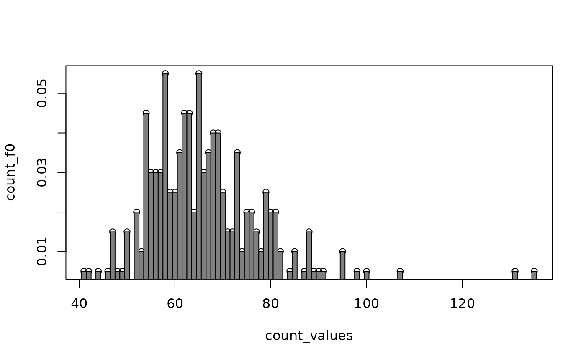

applications.Rmd
fish_weights <- fish_data$weight
weights_counts <- as.data.frame(table(fish_weights, dnn="Weight"))
count_values <- as.numeric(as.character((weights_counts$Weight)))
# Empirical frequencies
count_f0 = weights_counts$Freq/sum(weights_counts$Freq)
# #bin
# H=seq((max(fish_weights)-min(fish_weights))/500,1, length.out=50)
# hcv_bin<-CV_binom(fish_weights,H)
#
# fn_bino<-Estim_binom(weights,hcv_bin,fish_weights)
# ISE_bino<-sum((fn_bino - f0)^2)
#discrete opt
H=seq((max(fish_weights)-min(fish_weights))/200,(max(fish_weights)-min(fish_weights))/2, length.out=100)
for (kernel in c("optimal","triang")) {
for (k in c(1,2,3)) {
hcv <- cv_bandwidth(kernel=kernel,fish_weights,H,k=k)
fn_opt_k <- estim_kernel(kernel=kernel, x=count_values, h=hcv, v=fish_weights, k=k)
ISE_opt_k <-sum((fn_opt_k - count_f0)^2)
print(sprintf("kernel: %s - k=%d -> hcv = %f - ISE = %f", kernel, k, hcv, ISE_opt_k) )
}
}
#> [1] "kernel: optimal - k=1 -> hcv = 0.940000 - ISE = 0.002719"
#> [1] "kernel: optimal - k=2 -> hcv = 0.940000 - ISE = 0.003299"
#> [1] "kernel: optimal - k=3 -> hcv = 0.940000 - ISE = 0.003403"
#> [1] "kernel: triang - k=1 -> hcv = 42.300000 - ISE = 0.003098"
#> [1] "kernel: triang - k=2 -> hcv = 47.000000 - ISE = 0.003435"
#> [1] "kernel: triang - k=3 -> hcv = 47.000000 - ISE = 0.003467"
kernel = "epanech"
hcv <- cv_bandwidth(kernel=kernel,fish_weights,H,k=k)
fn_opt_k <- estim_kernel(kernel=kernel, x=count_values, h=hcv, v=fish_weights, k=k)
ISE_opt_k <-sum((fn_opt_k - count_f0)^2)
print(sprintf("kernel: %s -> hcv = %f - ISE = %f", kernel, hcv, ISE_opt_k) )
#> [1] "kernel: epanech -> hcv = 8.930000 - ISE = 0.003357"
barW <- 0.5
plot(count_values, count_f0)
rect(xleft=count_values-barW, ybottom=0, xright=count_values+barW, ytop=count_f0, col=gray(0.5))